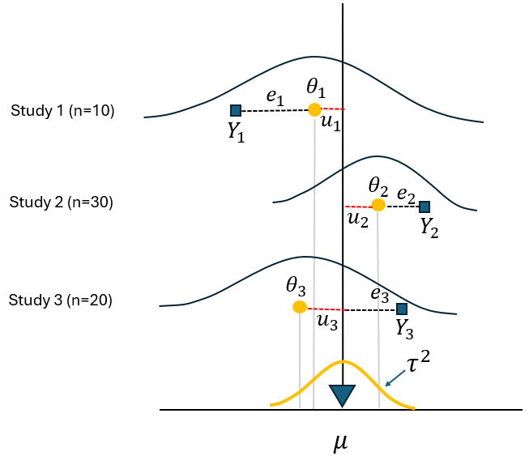
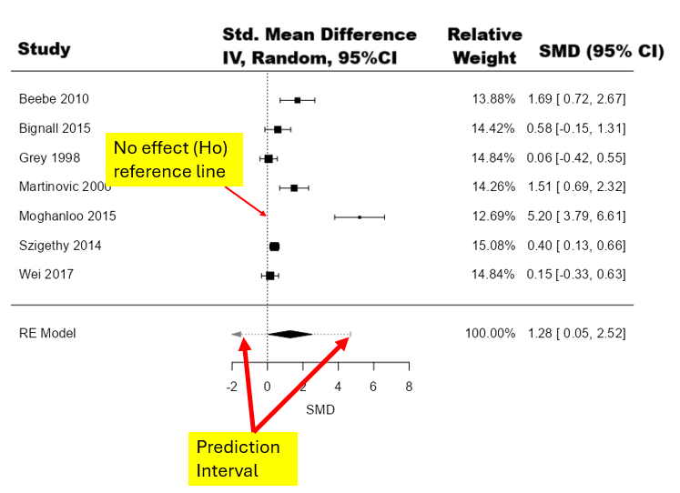

13 Systematic Review and Meta-analysis (2)
When we have finished this chapter, we should be able to:
13.1 Introduction
Although the term meta-analysis was first introduced by Smith and Glass in 1976 (Smith and Glass 1977), the first use of meta-analysis in the sense of combining quantitative studies is attributed to Karl Pearson (“Report on Certain Enteric Fever Inoculation Statistics” 1904), who analyzed data from five studies on the correlations between immunity and inoculation, as well as mortality and inoculation. In the late 1970s and early 1980s, following the work of Smith and Glass, meta-analysis gained widespread popularity, and the statistical methods necessary for its application were further refined and developed.
Meta-analysis is an optional component of a systematic review. It is the statistical analysis which combines the results of several independent studies considered by the analyst to be “combinable”. This definition highlights that the reviewer has to make the decision whether the studies are similar enough to be combined in a meta-analysis.
In a meta-analysis, a set of independent studies is included. Each study is summarized by an estimate of effect or association (the “study result”)—such as a mean difference, percentage, risk ratio, or correlation coefficient. The primary goal of a meta-analysis is to estimate an overall, or combined, effect size.
If all the studies included in the analysis were equally precise, we could simply calculate the average of their effect sizes. However, when some studies are more precise than others, it’s important to give more weight to those that provide more reliable information. This is exactly what a meta-analysis does. Instead of computing a simple average, it calculates a weighted average, assigning greater weight to more precise studies and less to those with higher uncertainty (Figure 13.1).
The key question, then, is how weights are assigned to individual studies. The answer depends on how we define the “combined effect”. There are two primary models used in meta-analysis, the fixed-effect model (also known as common effect model) and the random-effects model. Each model has different assumptions regarding the included studies, leading to different definitions of the combined effect and different mechanisms for assigning weights.
13.2 Fixed-effect model
The framework of fixed effect model
In a fixed-effect (FE) model we assume that all \(k\) studies considered in the meta-analysis share a common effect size, \(\theta_1 = \theta_2= ...=\theta_k = \theta\) (hence, the term fixed). Each observed effect, \(Y_i\), is considered to be distributed around \(\theta\), with a variance \(V_{Y_i}\) informed entirely by the within-study variance (sampling error).
The observed effect \(Y_i\) for any study (squares) is given by the common effect size, \(\theta\), plus the sampling error in that study, \(e_i\). That is,
\[Y_i = \theta + e_i\]
where \(e_i \sim N(0, V_{Y_i})\).
While the error in any given study is random, we can estimate the sampling distribution of the errors. In Figure 13.2 we have placed a normal curve about the true effect size for each study, with the width of the curve being based on the variance in that study. For example, in Study 1 the sample size is small, the variance large, and the observed effect is likely to fall anywhere within a relatively wide range. By contrast, in Study 2 the sample size is relatively large, the variance is small, and the observed effect is likely to fall in a relatively narrow range. (The width of the normal curve is based on the square root of the variance, or standard error).
The weight assigned to each study in a fixed-effect meta-analysis is the inverse of the variance \(V_{Y_i}\):
\[W_i = \frac{1}{V_{Y_i}}\]
Summary effect and confidence interval
The summary effect, \(\theta_F\), in a fixed-effect model represents the estimate of a common true effect shared by all included studies. The associated confidence interval (CI) reflects the uncertainty around this estimate. The width of the normal distribution curve for each study is determined by its variance—studies with smaller variances (typically due to larger sample sizes) yield narrower curves, indicating more precise estimates.
The summary effect and its confidence interval are displayed at the bottom of Figure 13.2.
\[\theta_F = \frac{\sum_{i=1}^k W_i Y_i}{\sum_{i=1}^k W_i}\]
The variance of \(\theta_F\) is given by
\[V_{\theta_F} = \frac{1}{\sum_{i=1}^k W_i}\]
and the estimated standard error of the summary effect is the square root of the variance,
\[SE_{\theta_F} = \sqrt{V_{\theta_F}}\]
Then, 95% lower and upper limits for the summary effect are estimated as
\[LL_{\theta_F} = \theta_F - 1.96 \times SE_{\theta_F}\]
and
\[UL_{\theta_F} = \theta_F + 1.96 \times SE_{\theta_F}\]
13.3 Random effects model
The framework of fixed effect model
When we decide to incorporate a group of studies in a meta-analysis, we assume that the studies have enough in common that it makes sense to synthesize their results. Nevertheless, there is generally no reason to believe that the true effect size is exactly the same in every study.
Instead of assuming all \(\theta_i\) are equal (as in a fixed-effect model), the random-effects model assumes:
\[\theta_i \sim N(\mu, \tau^2)\]
That is, the true effect sizes (represented by orange circles in Figure 13.3) are distributed around a mean, \(\mu\), and can be considered a random sample from a normal distribution with variance \(\tau^2\)—hence, the term random. In Figure 13.3 this distribution is illustrated by the orange normal curve at the bottom of the graph.

Figure 13.3 also highlights that the distance between the overall mean and the observed effect in any given study consists of two distinct parts: true variation in effect sizes (\(u_i\)) and sampling error (\(e_i\)).
Therefore, the observed effect \(Y_i\) for any study is given by the grand mean (\(\mu\)), the deviation of the study’s true effect from the grand mean (\(u_i\)), and the deviation of the study’s observed effect from the study’s true effect (\(e_i\)). That is,
\[Y_i = \theta_i + e_i = \mu + u_i + e_i\]
where \(e_i \sim N(0, V_{Y_i})\) and \(u_i \sim N(0, \tau^2)\).
To compute a study’s variance under the random-effects model, we need to know both the within-study variance and \(\tau^2\):
\[V^*_{Y_i} = V_{Y_i} + \tau^2\]
It is important to note that the same value of \(\tau^2\) applies to all studies in the meta-analysis.
Under the random-effects model the weight assigned to each study is:
\[W^*_i = \frac{1}{V^*_{Y_i}} = \frac{1}{V_{Y_i} + \tau^2}\] Study weights are more balanced under the random-effects model than under the fixed-effect model. Large studies are assigned less relative weight and small studies are assigned more relative weight as compared with the fixed-effect model.
(NOTE: To highlight the parallel between the formulas of random effects model and those in the fixed effect model we use the same notations but add an asterisk * to represent the random-effects version.)
Summary effect and confidence interval
The summary effect in random effect meta-analysis provides an estimation of the average treatment effect, and the CI reflects the uncertainty around this estimate, including the component of heterogeneity.
\[\theta_R = \frac{\sum_{i=1}^k W^*_i Y_i}{\sum_{i=1}^k W^*_i}\]
The variance of \(\theta_R\) is given by
\[V_{\theta_R} = \frac{1}{\sum_{i=1}^k W^*_i}\]
and the estimated standard error of the summary effect is the square root of the variance,
\[SE_{\theta_R} = \sqrt{V_{\theta_R}}\]
Then, 95% lower and upper limits for the summary effect are estimated as
\[LL_{\theta_R} = \theta_R - 1.96 \times SE_{\theta_R}\]
and
\[UL_{\theta_R} = \theta_R + 1.96 \times SE_{\theta_R}\]
In the presence of heterogeneity, the relative weights assigned under a random-effects model are more balanced than those in a fixed-effect model. This is because standard random-effects methods add a common component of variance (\(\tau^2\)) to each study’s weight to account for between-study variability in treatment effects. As a result, this dual source of variability—within-study and between-study—leads to larger overall variance, wider standard errors, and broader confidence intervals for the summary effect estimate.
Multiple estimators have been proposed for \(\tau^2\) such as the Der Simonian and Laird, the restricted maximum-likelihood and maximum likelihood, the Paul-Mantel, Hedges, and Hunter-Schmidt estimator.
NOTE: Hartung and Knapp introduced a new meta-analysis method based on a refined variance estimator in the random effects model. It has been argued that the Hartung–Knapp method is preferred over the DerSimonian–Laird method.
13.4 Forest plot
The main output of a meta-analysis is a graph called a forest plot. This plot depicts results from each primary study as well as the summary effect estimate.
Each study is identified by the first author and date of publication and is presented in a single row at the left side of the plot. Results from individual studies are shown as a square which represents the estimate of the effect size and a horizontal line which corresponds to the confidence interval. The size of the square is proportional to the weight of the study, which indicates its relative impact on the calculations of the summary effect (Figure 13.4).
There is also a vertical reference line at the null hypothesis (0.0 for mean difference results and 1.0 for ratio results), which denotes no effect between intervention and comparison groups.
The overall effect estimate is presented graphically as a diamond, with the endpoints representing the limits of the 95% confidence interval (CI). This confidence interval indicates how precisely we have estimated the effect size, based on the standard error of the mean.
In contrast, the 95% prediction interval reflects the expected range of effect sizes in future studies, considering the standard deviation of the effect sizes observed across studies. Unlike the confidence interval, which reflects the precision of the overall estimate, the prediction interval is an absolute measure that accounts for the heterogeneity between studies (Borenstein 2023).

13.5 Heterogeneity
13.5.1 Types of Heterogeneity
There are three types of heterogeneity: clinical, methodological, and statistical.
Clinical heterogeneity: Variability in participants (e.g., inclusion criteria, geographical location), interventions (e.g., dose, nature of control interventions) and outcomes (e.g., follow-up duration, cut-off points).
Methodological heterogeneity: Variability in the study design, the quality of conduct, and approach to analysis. For example, when the sequence of assigning participants to treatment groups is not concealed, randomized clinical trials tend to estimate larger treatment effects.
Statistical heterogeneity: Variability in effect sizes, resulting from clinical and/or methodological diversity. Statistical heterogeneity is present if the observed effects are more different from each other than would be expected due to random sampling.
13.5.2 Assessing heterogeneity in meta-analysis
Assessment of the consistency of effects across studies is an essential part of meta-analysis. Unless we know how consistent the results of studies are, we cannot determine the generalisability of the findings of the meta-analysis.
Cochran’s Q statistic
The statistical test usually applied in meta-analysis for detecting true heterogeneity among studies is the Q test, proposed by Cochran. Under the null hypothesis of no heterogeneity (\(H_o\): the true effects are the same in all the primary studies included in meta-analysis; or \(H_o\): \(\tau^2 = 0\)), the Q statistic follows a chi-square distribution with k-1 degrees of freedom, where k is the number of studies.
The statistical power of Cochran’s Q test is often low, particularly in meta-analyses that include a small number of studies. Consequently, true heterogeneity may go undetected when conventional significance thresholds, such as 0.05, are applied. To mitigate this limitation, a more lenient threshold of 0.10 has been proposed; however, this increases the risk of a Type I error. As such, the Q test should be interpreted with caution, especially when the analysis includes fewer than 20 studies. Furthermore, it is not recommended to determine the choice between a fixed-effect and a random-effects model solely based on the Q test results, as it does not provide sufficient evidence to guide model selection.
Statistical heterogeneity may not always be observed, even in the presence of clinical and/or methodological heterogeneity. Therefore, the absence of statistical heterogeneity should not be interpreted as evidence of no heterogeneity.
\(\tau^2\) measure
\(\tau^2\) describes the underlying between-study variability. Its square root, \(\tau\), is measured in the same units as the outcome. Its estimate does not systematically increase with either the number of studies or the sample size.
\(I^2\) index
Another statistic used to assess heterogeneity is \(I^2\), which represents the part of total variation that is due to between-studies variance. \(I^2\) is a percentage and its values lie between 0% and 100%. For example, an \(I^2\) value of 0% indicates that all variability in effect size estimates is due to sampling error within studies, whereas an \(I^2\) value of 50% indicates that half of the total variability among effect sizes is caused by true heterogeneity between studies. Importantly, \(I^2\) is a relative measure and can be directly compared between meta-analyses with different numbers of studies and various types of outcome data.
\(I^2\) values of approximately 25%, 50%, and 75% have been proposed to indicate low, moderate, and high heterogeneity, respectively (Higgins 2003). However, it should be interpreted with caution when the number of included studies is small (e.g., fewer than 20). Moreover, when the study sizes become very large, the sampling error tends to 0 and \(I^2\) tends to 1 and such heterogeneity may not be clinically relevant.
The majority of meta-analyses use the \(I^2\) index to quantify heterogeneity. While this practice is common it is nevertheless incorrect. I-squared does not tell us how much the effect size varies (except when I-squared is zero percent). The statistic that does convey this information is the prediction interval (Borenstein 2023).
13.6 Small-study effects in meta-Analysis
“Small-study effects” is a generic term for the phenomenon that smaller studies sometimes show different, often larger, treatment effects than large ones.
Potential sources of asymmetry in funnel plots
- One possible, and probably the most well-known, reason is publication bias. This occurs when the likelihood of a study being published—particularly a small study—increases if it shows a stronger, statistically significant, and favorable effect. Conversely, small studies with null or negative findings are less likely to be published, especially since such studies are often perceived as less robust or less interesting.
NOTE: Publication bias affects all review methods (not a problem exclusive to MAs!)
There are a number of other possible reasons for small-study effects. One is selective reporting of the most favourable outcomes, known as outcome reporting bias.
Another possible cause of small-study effects is clinical heterogeneity between patients in large and small studies; e.g., patients in smaller studies may have been selected so that a favourable outcome of the experimental treatment may be expected.
Tools to assess small-study effects
A funnel plot is a graphical tool commonly used in meta-analysis to assess small-study effects. It is a simple scatterplot that presents the treatment effects estimated from individual studies on the x-axis and a measure of precision, usually the standard error of the effect estimate, on the y-axis. At the top of the graph, studies with greater precision (smaller standard errors) are located, while those with less precision (larger standard errors) are found lower on the plot. A vertical solid line indicates the estimate based on the model. A pseudo confidence interval region is drawn around this value with bounds equal to ±1.96 SE, where SE is the standard error value from the y‐axis (assuming level = 95)(Figure 13.5).
If no excessive between-study heterogeneity exists, smaller studies (with larger standard errors) would scatter more than larger studies. That is, the funnel plot would show the form of a triangle (inverted funnel) symmetric with respect to the average treatment effect, with broad variability for small imprecise studies (at the bottom of the plot) and small dispersion for large, precise studies (at the top) (Figure 13.5).
In an asymmetrical funnel plot, one side may exhibit a higher density of studies than the other, or there may be a noticeable absence of studies on one side, both of which suggest potential bias (Figure 13.6).
Reviewers might attempt to assess small-study effects by inspecting the funnel plot for asymmetry, either visually or formally, using methods such as Egger’s test or the Begg and Mazumdar rank correlation. For these statistical tests, a p-value < 0.05 indicates asymmetry in the funnel plot. In general, these tests are relatively imprecise, and it is not advisable to test for asymmetry in the funnel plot when fewer than ten studies are available (Figure 13.5).
Funnel-plot asymmetry thus raises the possibility of bias, but it is not proof of bias (Sterne, Gavaghan, and Egger 2000). It is important to note, however, that asymmetry (unless produced by chance alone) will always lead us to question the interpretation of the overall estimate of effect when studies are combined in a meta-analysis. It is suggested that the funnel plot should be seen as a generic means of examining “small-study effects” (the tendency for the smaller studies in a meta-analysis to show larger treatment effects) rather than as a tool to diagnose specific types of bias.
The Test of Excess Significance (TES) is a statistical method used to detect and quantify publication bias or selective reporting in the literature. Specifically, it examines whether the number of statistically significant findings in a set of studies exceeds what would be expected by chance. P-values less than 0.05 indicate that there are more significant results than expected, which may suggest publication bias or selective reporting.
13.7 Meta-analysis using Jamovi
The aim of this meta-analysis is to investigate whether psychological therapies are more effective than any comparator in improving quality of life immediately post-intervention. Seven studies examined this outcome, and the following data were extracted for each group:
- study: name and year of the study
- Mean1: mean of the psychological therapy group
- SD1: standard deviation of the psychological therapy group
- Total1: number of participants of the psychological therapy group
- Mean2: mean of the comparator group
- SD2: standard deviation of the comparator group
- Total2: number of participants of the comparator group
Standardized mean differences (SMDs) will be used to summarize the data from each group, as the studies employed different scales to assess the outcome.
Open the dataset named “meta” from the file tab in the menu (Figure 13.8).
On the Jamovi top menu navigate to
flowchart LR A(Analyses) -.-> B(Meta Analysis) -.-> C(Mean Differences)
as shown below (Figure 13.9).
The The Mean Differences box opens (Figure 13.10). From the left-hand pane drag the variables into the right-hand fields, as shown below:

From the Model Options we select “Restricted Maximum-Likelihood” for estimating the \(\tau^2\), and “Standardized Mean Difference” as the measure of effect size.
Next, from the Plot section tick the box “Prediction Interval”, “Model fitting weights”, and in the X-Axis Title type “SMD”.

A total of k=7 studies were included in the analysis. The observed standardized mean differences (SMD) ranged from 0.064 to 5.20, with all estimates being positive. The estimated average SMD based on the random-effects model was 1.28 (95% CI: 0.05 to 2.52). Therefore, the average outcome differed significantly from zero (z = 2.04, p = 0.04).
According to the Q-test, the true effects do not appear to be the same across all primary studies (Q(6) = 60.3, p < 0.001). The proportion of total variance attributable to between-study differences is substantial, with an I² value of 96.9%; however, the small number of studies limits the reliability of this estimate. Most importantly, the 95% prediction interval for the true effect, ranging from –2.12 to 4.69, reflects considerable heterogeneity across studies.
Figure 13.15 presents the forest plot comparing psychological therapy with any comparator for the outcome Quality of life (short-term).
The psychological therapies were more effective than any comparator in improving quality of life immediately post-intervention (SMD = 1.28, CI 0.05 to 2.52).
Observe that the forest plot clearly demonstrates that the Monghanloo (2015) study (n = 34) exhibits a large standardized mean difference (SMD) of approximately 5.20, with a confidence interval ranging from 3.8 to 6.6. This finding is markedly different from the other studies (it may be a potential outlier in the context of this model), which show effect sizes closer to zero or slightly positive.
(Note: The authors of the systematic review considered a SMD effect size of 0.2 to be small, 0.5 medium, and greater than 0.8 large).
Small-study effects and publication bias
We check Show Test of Excess Significance output from the Publication Bias (Figure 13.16).
The visual asymmetry of the funnel plot, particularly the absence of smaller studies showing non-positive effects, raises concerns about a small-study effect (Figure 13.18). Egger’s test also suggests the presence of funnel plot asymmetry (z = 4.4, p < 0.001). However, the Begg and Mazumdar rank correlation test was not statistically significant (Kendall’s tau = 0.62, p = 0.069) and the Test of Excess Significance indicated no evidence of excess significance bias (i.e., no suspiciously high number of significant findings). Given the small number of studies (n = 7), the results from both the statistical tests and the funnel plot are not very clear and should be interpreted with caution.
(NOTE: Research has found that funnel plots using the standardized mean difference (SMD) in combination with the standard error (SE) are unsuitable for assessing publication bias and can lead to false-positive results (Zwetsloot et al. 2017))